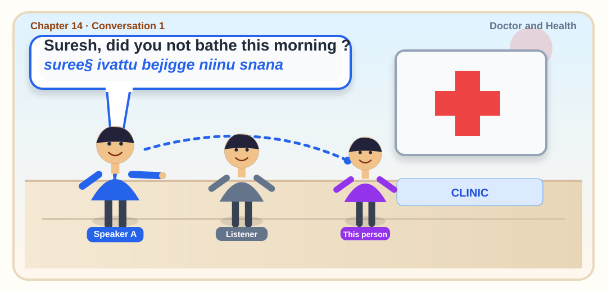

Conversation 1 · Doctor and Health
Suresh, did you not bathe this morning ?
ಸುರೇಶ್, ನೀವು ಇಂದು ಬೆಳಿಗ್ಗೆ ಸ್ನಾನ ಮಾಡಲಿಲ್ಲವೇ?
Suresh, neevu indu beligge snana maadillave?
Original PDF: suree§ ivattu bejigge niinu snana
